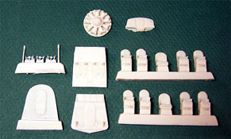

{kind=link}
{kind=link}
{kind=link}
{kind=link}


Azur 1/72 Fairchild F-91
Kit #19
MSRP $24.95
Images and text Copyright � 2005 by Matt Swan
Developmental Background
In 1935 Pan American engineers working closely with A. A. Gassner developed this amphibious aircraft that was to be known as the Fairchild F-91. It was an all metal shoulder wing monoplane intended to carry eight passengers. The aircraft featured fully retractable landing gear and could cruise at 155 MPH at sea level and 151 MPH at 8000 feet. While a very attractive airplane only eleven were ever produced with two of those going to the Brazilian subsidiary of Pan American for use on the Amazon River. These two aircraft served faithfully until 1945 when they were stripped of all useful equipment and scrapped. The prototype aircraft was purchased by a clandestine operative for the Spanish Republicans but the aircraft was intercepted during shipment by the Nationalists and commandeered for their use. Two F-91s went to the Japanese Navy for testing and were used as liaison aircraft. The last F-91 produced was purchased by American Millionaire Gar Wood who had it named �Wings of Mercy� and painted in RAF colors. He donated it to the RAF and they sent it to Egypt to perform SAR duties. It filled this role with several different camouflage schemes until 1943 when it hit a submerged object and was lost.
For an aircraft of such limited production it certainly led a colorful life. Today none of these aircraft survive.
The Kit
This kit shows up under two different manufacture names with slight differences. Initially the kit was produced by Sword as a limited run injection kit and shortly after that Azur picked up the molds, added a package of resin details and a different decal sheet. While you read this article keep in mind that all this information with the exception of the resin and the decals pertains to the Sword kit as well.
The kit arrives in a medium size box that opens from the end (I hate that design) with great box art of the Gar Wood RAF SAR aircraft. Inside the box we have a single large poly bag containing the kit parts. Right away it is obvious that this is a limited run kit and the tell tale Sword heavy injection pins are found inside all the large pieces. These must be removed from the wing and fuselage interiors prior to assembly. Also we see a fine level of flash on many of the parts. On the fuselage there is a large casting booger on the aft hatch that will need cleaning up. Inside the fuselage there are locator lines inside the right half of the fuselage only intended to help the modeler place the various bulkheads. When test fitting the fuselage halves together they did seem to line up well and are of equal size (always a good sign).
The wing comes as a five-piece assembly. I�m not quite sure what the logic was behind this and it just seems like it will make construction difficult. I saw this same design on the HPM Bv-141 model and know it caused lots of trouble there. Not only do we have to deal with those huge injector pins inside the wing but there is also a nasty mold separation seam here that needs cleaning up. Landing gear pieces look fiddly and instructions seem a little vague there. I plan on building mine in flight and just stepping around and issues here. The clear parts come in two different medias, we have all the small side windows on a sprues of clear injection molded plastic but the main canopy comes as a vacuformed piece. The injection molded pieces look good with only slight distortion in the plastic and the Vac pieces are also very good with only a few Vac dimples across the top. The kit does provide a spare main canopy just in case. So far we have fifty pieces in slightly soft low pressure injection gray plastic, ten clear injection molded pieces and two Vac canopies.
Now let�s talk about what really separates this kit from the Sword kit � the resin goodies. First we have a resin dash which is a huge improvement over the glob of plastic that represents the dash in the Sword kit. Here you can actually see instrument details but, unfortunately, most of this will be hidden once the model is built. The cockpit floor and aft bulkhead are replaced with resin pieces as is the passenger cabin bulkhead. All seats are done in resin and look very nice with good detail. Pour stubs are average and look like they will cut off easily enough. Control yokes are replaced with resin also and a spare yoke is included. This seems like a good idea as these pieces are very delicate and I feel confident that I�ll screw up on at least one of them. The final resin piece is an engine face that shows good detail but like the dash this will most likely be lost from view when the model is completed. Hey, we know it�s there and that is what really counts. All told we have twenty resin pieces to supplement the plastic parts bringing the total parts count in the box to eighty-two.

You may click on the small images above to view larger pictures
Decals and Instructions
Instructions for the kit come as a small booklet with a historical background for the aircraft done in four languages followed by a complete parts map and six exploded view construction steps. Within the construction steps there are a few color call-outs and these are by color name only with no Federal Standard numbers or paint manufacture codes. The final two pages of the booklet cover exterior paint schemes for the RAF aircraft and the Spanish Nationalist aircraft. As with the construction steps the color coding is by name only. It appears that with careful study and plenty of dry fitting this model should build up nicely.
decals are by Cartograf out of Italy and look pretty good. They show good color density, good print registry and appear nicely thin. Included here are propeller markings and general aircraft markings for the two aircraft mentioned previously. There is some debate as to the accuracy of the markings but with only eleven aircraft ever being constructed you should be able to verify your markings through historical documentation. For me, I�ll just go with the kit decals. I�ve used Cartograf decals before and found them to behave well with conventional setting solutions.
Conclusions
I am a sucker for strange and unusual aircraft which means there was absolutely no hesitation when it came to acquiring this model. The only issue I have with it is that it is NOT 1/48 scale (bummer). The overall quality of the primary plastic pieces is good and the addition of the resin to replace those interior details makes for a vast improvement on the kit. If you are into unusual aircraft and/or seaplanes then this kit is for you. At this point in time there is nothing on the aftermarket for this kit and to tell the truth I don�t see where it needs much. I give this kit a good recommendation.